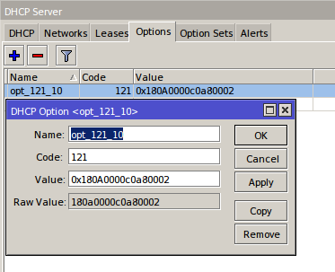

Mikrotik, DHCP Classless Route
DHCP Classless Route, зачем он нужен?
У нас в компании для VPN используется решение на tincd. Из-за того, что на Mikrotik я не нашёл простого способа запустить tinc, было решено запускать VPN на отдельном сервере и использовать его как шлюз. Первая попытка — прописать маршрут на маршрутизаторе. По пингам было видно, что маршрутизатор присылает сообщение о редиректе, при этом наблюдались сетевые лаги. При работе создавалось ощущение, что соединение, установленные таким образом, подтормаживает.
В качестве эксперимента решил попробовать на своём рабочем месте прописать маршрут руками. Это оказалось правильным решением — лаги пропали, но данную операцию нужно было проделать на всех машинах офиса, а руками вбивать как то не хотелось. В связи с этим понадобился способ, без особого напряжения, настраивать статический маршрут, на всех клиентах, получающих адрес по DHCP протоколу.
Процесс гугления привёл меня на страницу документации Mikrotika. Всё ясно — нам поможет DHCP Classless Route. Настройка относительно легка, но вот из-за этой относительности убил на настройку пол дня. При этом возникали проблемы с сетевым доступом у хостов сети — у Windows машин пропадал маршрут по умолчанию.
Ещё одна сложность настройки Mikrotik заключается в том, что нужно вводить маршрут в шестнадцатеричном (либо в двоичном) виде, что меня слегка сбило с толку. Да и в документации некоторые нюансы не указаны. Данная опция рассмотрена в базовом варианте. А дальше как хотите )). Пришлось немного углубиться в подробности настройки.
Для того что бы у вас маршрут получили все хосты, независимо от семейства операционной системы нужно настроить 2 опции 121 и 249. Если бы все разработчики следовали бы RFC, то возможно жизнь системных администраторов была бы гораздо преснее и менее интересной.
Опция 121
Опция 121, как и все остальные DHCP опции, описана в rfc3442. Этот документ диктует следующие правила и требования к 121 параметру:
Согласно этого же документа схема маршрута будет выглядеть так:
Code Len Destination 1 Router 1
+-----+---+----+-----+----+----+----+----+----+
| 121 | n | d1 |… | dN | r1 | r2 | r3 | r4 |
+-----+---+----+-----+----+----+----+----+----+
Destination 2 Router 2
+----+-----+----+----+----+----+----+
| d1 |… | dN | r1 | r2 | r3 | r4 |
+----+-----+----+----+----+----+----+
Для того что бы правильно составить маршрут нужно перевести адрес сети назначения, маску подсети и адрес шлюза в шестнадцатеричный формат. Желающие пострадатьповысить личный скилл могут переводить в двоичный формат.
Пример 1.
Составим строку маршрута для сети 10.0.0.0/24 через маршрутизатор 192.168.0.2
LEN (маска подсети назначения) = 24 = 0x18
DESTINATION = 10.0.0.0 = 0A 00 00
ROUTER = 192.168.0.2 = c0 a8 00 02
Итоговая строчка: 0x180A0000c0a80002
добавляем маршрут в микротик:
через winbox

через консоль
/ip dhcp-server option
add code=121 name=opt_121_10 value=0x180A0000c0a80002
set 0 dhcp-option=opt_121_10
Пример 2.
Составим строку маршрута для сети 10.0.0.0/8 через маршрутизатор 192.168.0.2
LEN (маска подсети назначения) = 8 = 0x08
DESTINATION = 10.0.0.0 = 0A
ROUTER = 192.168.0.2 = c0 a8 00 02
Итоговая строчка: 0x080Ac0a80002
Пример 3.
Составим строку маршрута для сети 10.0.0.0/8 через маршрутизатор 192.168.0.2
LEN (маска подсети назначения) = 29 = 0x19
DESTINATION = 172.16.4.0 = AC100400
ROUTER = 192.168.0.2 = AC10040001
Итоговая строчка: 0x19AC100400AC10040001
Картинки ко 2 им 3 примерам не прикладываю, т.к. на самом маршрутизаторе настраивать идентично примеру 1.
Очень легко можем нарваться на внезапное отключение клиентов из-за одного маленького нюанса
Если вы некорректно укажете адрес подсети. Ошибку сделать очень легко. Что бы избежать этого нужно вспомнить теорию и применить её на практике.
Давайте вспомним. Есть адрес и маска подсети. Адрес делят на две части — сетевую и хостовую.
Маска подсети указывает сколько первых бит адреса относится к сетевой части. Соответственно, оставшаяся часть адреса, указывает на хостовую.
Если нам нужен маршруте к сети с маской 24 бита, то нам нужны первые 3 октета адреса сети назначения (Пример 1)
Если нам нужен маршруте к сети с маской 8 бит, то нам нужен, всего лишь, 1-й октет адреса сети назначения (Пример 2)
Если нам нужен маршруте к сети с маской 25 бит, то тут нужно будет указывать все октеты (Пример 3)
Опция 249
На страничке wikipedia с описанием dhcp есть ссылка на общепринятые DHCP опции. 249 опция находится в диапазоне для частного использования.
Я не знаю почему товарищи мелгкомягкие придерживаются взглядов товарища Ленина, но им они следуют достаточно фанатично. Несмотря на наличие RFC3442 майкрософт решил на своих клиентах маршрут получать опцией 249.
На микротике данная опция настраивается подобно 121-й опции
0x[маска подсети адреса назначения][адрес назначения][адрес шлюза]
Если возникнут проблемы с настройкой Windows машин, то попробуйте воспользоваться советом под спойлером
Несколько маршрутов одной строкой
К сожалению в документации на сайте Mikrotik нет примера как правильно настраивать несколько маршрутов. На помощь нам приходит RFC3442 в котором есть замечательная схема составления нескольких маршрутов которая приведена выше.
Добавляем к первому маршруту второй маршрут без 0x
Пример
два маршрута 10.0.0.0/8 и 172.16.4.0/24 через шлюз 192.168.0.2 одной строкой будут выглядеть так:
0x080Ac0a8000218AC100Bc0a80002
жирным выделил маски подсетей
Надеюсь что данная информация будет кому то полезной.
PS: Прошу замечания и предложения направлять в личку.
UPD:
товарищ orlovdl набросал python функцию для перевода блока адресов в Hex формат.
UPD:
товарищ poofeg подсказал:
Я бы обратил внимание на эту фразу в RFC3442:
DHCP server administrators [...] should specify the default router(s) both in the Router option and in the Classless Static Routes option.
Во всех ваших примерах в опции 121 маршрут по умолчанию отсутствует. То есть к обоим строчкам лучше в конце дописать 00c0a80001 (0.0.0.0/0 via 192.168.0.1).